01Ton avantage
Même sans expérience, t'as tes chances.
Points projetés, positions à combler, favoris : tout est là quand ton tour arrive.
Repêchage, échanges, classement et stats au même endroit. Simple à comprendre, facile à gérer. Gratuit, sans application.
Jouer gratuitementPoints projetés, positions à combler, favoris : tout est là quand ton tour arrive.
Chaque nuit, Fantazy compile les stats de la LNH. Le matin, ton rang est à jour.
Pool d'exemple, calculé avec le barème Fantazy sur la vraie saison 2025–26.
Propose un échange, l'autre gérant accepte ou refuse, et les alignements se mettent à jour tout seuls.
Les 32 clubs et tous leurs joueurs. Tu peux même repêcher un club au complet.
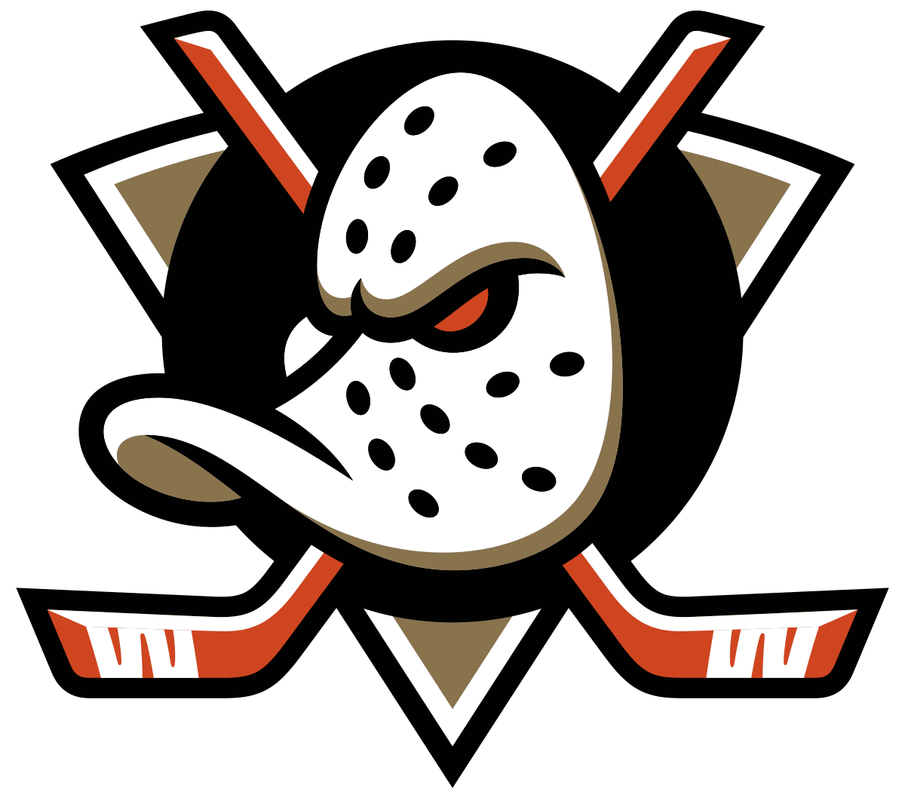
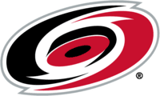
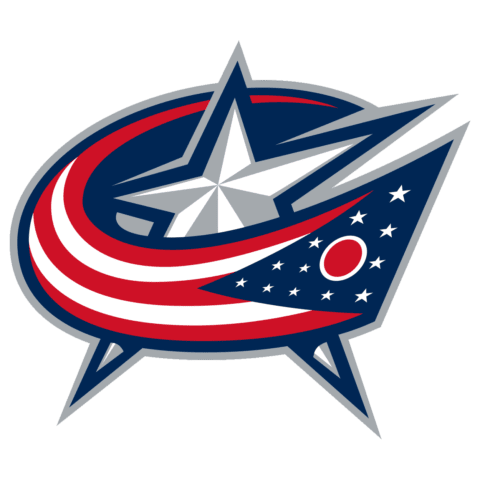
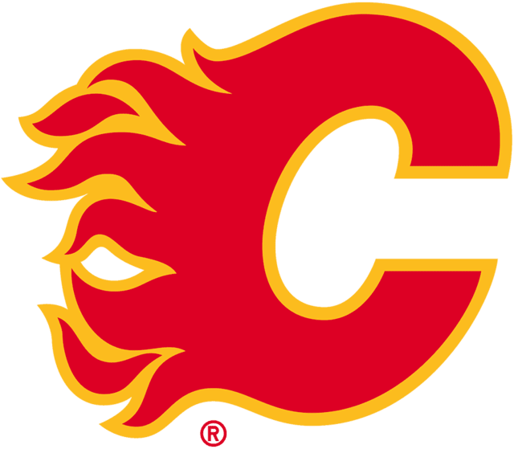
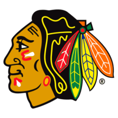
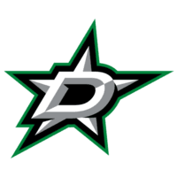
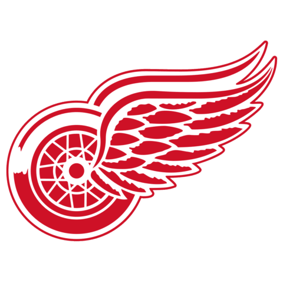
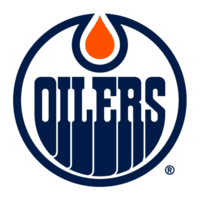
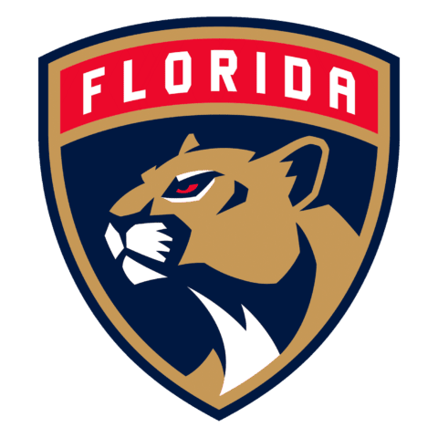
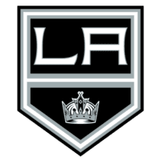
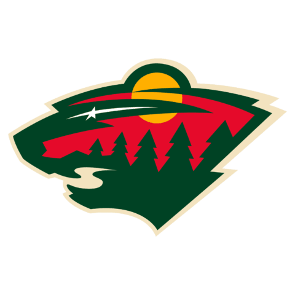
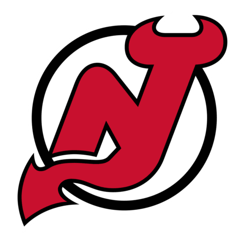
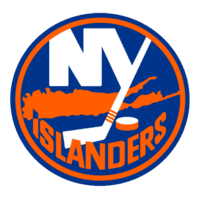
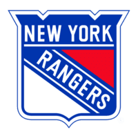
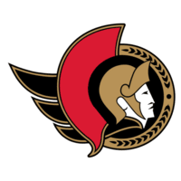
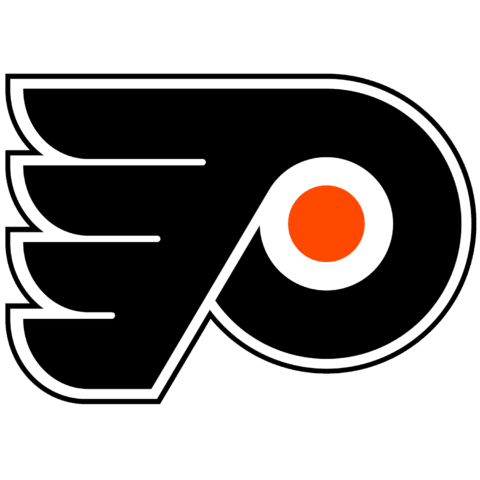
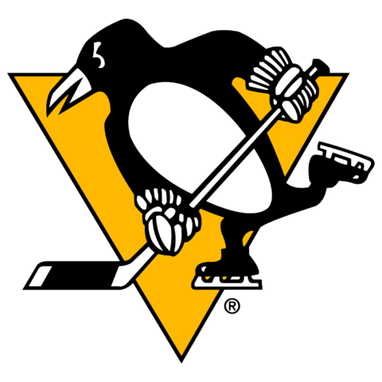
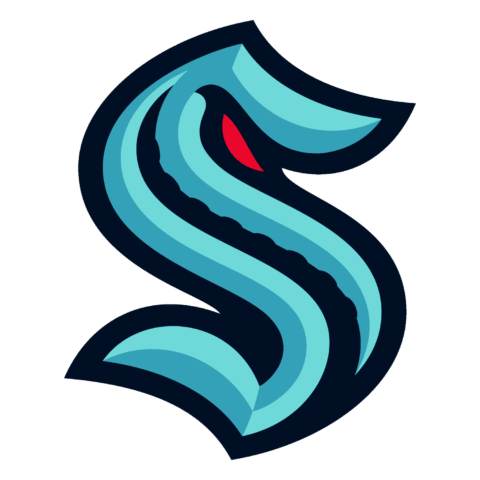
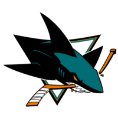
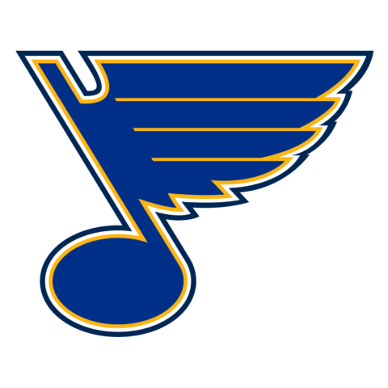
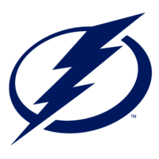
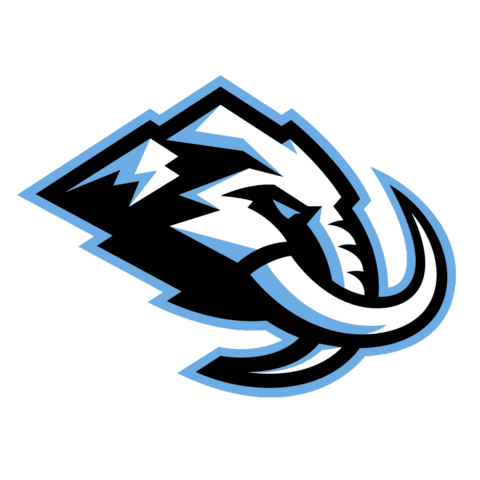
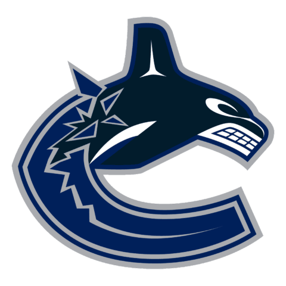
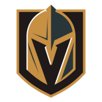
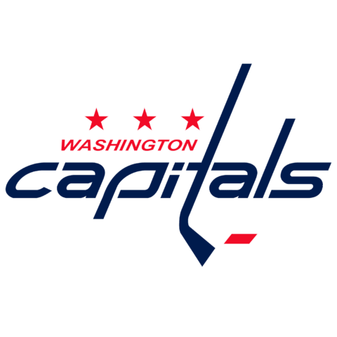
Oui. Les points projetés, tes favoris et les positions à combler te guident à chaque choix.
Oui, créer ou rejoindre un pool est gratuit. Et aucune mise : on joue pour l'honneur.
Lance un pool rapide : tu joues avec d'autres passionnés dès que les 4 places sont prises.
Non. Fantazy fonctionne directement dans ton navigateur, sur téléphone comme sur ordinateur.
Bienvenue
Une partie en une minute, avec tes amis ou avec d’autres passionnés.
Dès que les 4 places sont prises, le repêchage commence.
0 / 4 joueurs · encore 4 places
Invitez vos amis et configurez votre ligue personnalisée avec vos propres règles de scoring.
Commencer →Sélectionnez les meilleurs joueurs de la LNH pour bâtir l'équipe parfaite.
Voir le repêchage →Affrontez d'autres gérants semaine après semaine et grimpez le classement.
Voir le classement →


Comment ça marche
1 · Repêche ton équipeUn repêchage guidé, un joueur à la fois.
2 · Joue en groupeTes amis, ton bureau ou des inconnus.
3 · Suis le classementDes points chaque soir, toute la saison.